introduction aux études de symbolisme alchimique et de philosophie hermétique
revu le 15 novembre 2015
Dans les pages que vous verrez ci-dessous, nous tentons de donner une interprétation raisonnable de l'alchimie fondée sur l'étude des textes modernes et classiques. Notre parcours commence avec les gravures et emblèmes alchimiques qui pourront aider l'impétrant à s'orienter dans un processus de pensée assez particulier, basé non pas sur le raisonnement cartésien, mais plutôt d'ordre métalogique, et qui doit être adopté dans l'appropriation critique des traités anciens. Ces gravures donneront au lecteur une ambiance propre à lui faire voir, du moins l'espérons-nous, en quoi consiste l'idée alchimique qui sert d'introduction aux grandes sections ; elles couvrent les ouvrages suivants et certaines sections :
Atalanta fugiens - Philosophia Reformata - Triomphe Hermétique - Douze Clefs de Philosophie - Livre des Figures Hiéroglyphiques - Livre d'Abraham Juif - Mutus Liber - Splendor Solis [Toyson d'Or] - De Lapide Philosophorum - Donum Dei - L'Escalier des Sages - Typus Mundi - Vices et Vertus de Notre-Dame de Paris - signes du zodiaque - Tarot alchimique - Jardinet récréatif hermetico-spagyrique - emblèmes du Philosophe Solidonius - Aurora Consurgens - Alchemia [Libavius] - Orthelius [Commentarius in Novum Lumen Chymicum] - Nazari [Della tramutatione metallica] - Salmon [Medicina practica] - Maier [Symbola Aureae Mensae] - poêle de Winterthur - Das Buch der heyligen Dreyfaltigkeit -
Les gravures et aquarelles peuvent être visionnées grâce à un visionneur - diaporama (slide-show) adapté à chaque recueil : Atalanta fugiens - Philosophia Reformata - Triomphe Hermétique - Douze Clefs de Philosophie - Livre des Figures Hiéroglyphiques - Livre d'Abraham Juif - Mutus Liber - Toyson d'Or - De Lapide Philosophorum - Donum Dei - L'Escalier des Sages - Typus Mundi - Vices et les Vertus de Notre-Dame de Paris - signes du zodiaque - Tarot alchimique - Jardinet récréatif hermetico- spagyrique - emblèmes du Philosophe Solidonius - Aurora consurgens - Livre de la sainte Trinité - Ripley's Scrowle - Alchemia [Libavius] avec quatre planches commentées -
Dans la même optique, nous donnons progressivement une section consacrée aux symboles de l'Art [partie I et II].
Mais d'abord, et à titre personnel, je présenterai aux lecteurs ce texte de M. Philippe Litzler, avec qui j'ai collaboré à plusieurs reprises dans l'élaboration de certaines sections, dont la moindre n'est pas la voie humide, et que j'aurai pu aussi intituler : à la recherche de l'or potable. Je dois aussi à M. Litzler un texte rare et très riche d'enseignement, le Livre de Crates dont j'ai lieu de croire qu'il se rattache aux écrits dits hermétiques, tels la Table d'Emeraude ou encore le Dialogue entre Marie et Horus. C'est le lieu de rappeler ici le lien quasi « hermétique » qui me lie à deux amis : Ph. L. et Alain Mauranne dont les belles photographies et de nombreuses reproductions font, à coup sûr, une partie de l'intérêt de ce travail, donné librement aux internautes et aux disciples d'Hermès.
Le secret alchimique
Si vous êtes un fidèle du site Alchimie, c’est que le problème du secret alchimique vous intéresse. Vous vous demandez même, au fond de votre conscience, s’il y a vraiment un secret. Je peux vous rassurer : il y a vraiment un secret alchimique, avec l’élaboration à la clé d’un produit « merveilleux ». Mais restons prudent. L ’Alchimie est née en Égypte à l’époque des Ptolémée (bien qu’il y ait là aussi contestation entre les « experts »). Or, à cette époque, beaucoup de « choses » qui nous paraissent complètement banales passaient pour être « merveilleuses ». Entre autre la fabrication du verre. Cette matière a toujours fasciné les alchimistes. C’est pourquoi il est intéressant de comprendre sa fabrication et sa coloration. Avec ces deux thèmes de recherche nous entrons déjà dans l’antre des pré-chimistes. Fulcanelli nous signale qu’au Moyen Âge les verriers étaient des chevaliers qui allaient « au travail » avec l’épée sur le côté. Ceci n’est peut-être qu’anecdotique, du moins il fallait être un chevalier, dans le sens noble du terme, pour travailler le verre. Je vous conseille donc de lire tous les chapitres écrits sur le verre et & sur les pierres précieuses. Et oui, fabriquer des gemmes artificielles est une activité qui se rapproche énormément du travail du verre. Un autre conseil - d’importance– étudiez également bien le processus du Pourpre de Cassius (connu bien avant lui) et que vous trouverez également sur ce site. Le Pourpre de Cassius n ’est pas la Pierre, non, mais il ressemble bougrement à un Ferment de la Pierre au rouge, même s’il n’a rien d ’alchimique en lui.
Revenons à l ’Antiquité qui a vu la naissance de l’Alchimie. Les gens de ces époques étaient persuadés qu’il était nécessaire de se purifier pour survivre dans l’autre vie. On pouvait se purifier moralement, en suivant les préceptes de Socrate et de Platon (par la discrimination philosophique), en participant aux Mystères (ce qui était moins fatigant), en suivant les règles de la nouvelle religion (le Christianisme), etc. L’Alchimie proposait une autre voie : une purification de l’esprit par la recherche théorique dans les livres, une glorification des ou du Dieu(x) dans un isolement assez complet (l’alchimiste est tellement occupé par sa recherche qu’il n’est plus complètement de ce monde) et, surtout, par l’absorption de son élixir final, la purification de son corps humain à la façon d’un Christ (corps de Lumière) ou d’un Fulcanelli qui transcende les deux univers (le visible et l’autre) & Ceci faisait donc parti des préoccupations des Anciens, de la même façon que nous nous intéressons aujourd’hui à l ’Internet, aux vacances payées ou à la retraite après 37 années de cotisation !
La Pierre philosophale n’était donc pas uniquement un produit pour se purifier : son mode de fabrication montrait le chemin & Effectivement, la Pierre– à partir de la matière préparée– devenait noire, puis blanche et enfin rouge, couleur de la royauté ! De plus, la cendre morte renaissait grâce à l’apport de l’Air et de l’Eau, ainsi qu’on imaginait que cela pouvait se réaliser lors de la résurrection des corps. [...]
Pour les travaux pratiques alchimiques on comprendra donc beaucoup mieux l’intérêt qu’il y a à connaître la préparation du verre et sa coloration, la fabrication des gemmes artificielles et la connaissance de toutes les substances capables de changer de « propriétés » physiques, sans pour autant faire entrer la radioactivité dans notre vieille philosophie de la nature, tentation particulièrement vivace chez ceux qui ont mal lu (et mal compris) les textes anciens. Quant à la fabrication de l’or & il serait peut-être utile de rappeler que les alchimistes parlaient par métaphores ! Aussi l’Or alchimique n’est-il rien d’autre que la dénomination de la Matière lorsque celle-ci devient blanche. On pourrait tout aussi bien parler de Magnésie blanche ou de Terre blanche. Est-il possible d ’utiliser de l’or vulgaire dans la préparation de la Pierre ? Oui, bien sûr. On prépare un Ferment avec de la chaux d’or que l’on peut incorporer à la Pierre pour obtenir la Pierre métallique, mais cela n’est plus le but principal de l’alchimiste. Y a-t-il possibilité de transmutation avec ce nouveau produit ? Parler de transmutation relève à nouveau du jargon des alchimistes. Nous dirions aujourd’hui plutôt permutation ! On aura dans ce cas également intérêt à relire la préparation du Pourpre de Cassius et à étudier les phénomènes physico-chimiques relatifs aux produits colloïdaux.
Une dernière précision. Ceux qui utilisent la stibine (sulfure d ’antimoine) ignorent certainement qu’ils ne travaillent pas avec l’Antimoine des alchimistes. La stibine est fort intéressante pour toutes ses réactions chimiques qui permettent d’avoir une connaissance presque complète des réactions en chimie minérale. Mais la substance elle-même, autre que purifier l’or métallique ou servir de purgatif, n ’entre pas du tout dans le travail de laboratoire de l ’alchimiste. J’ai bien parlé de travail de laboratoire : travailler et prier sont effectivement les deux piliers de notre science. Mais ce serait omettre une information des plus bénéfiques que d’oublier l’outil principal de nos philosophes de la nature. En effet, pour se purifier soi-même, nos infatigables chercheurs utilisaient une méthode vieille comme le monde : ils chantaient, à l’image des moines qui utilisent les chants grégoriens (Saint Grégoire avait vraisemblablement des connaissances alchimiques). Aujourd’hui s’offre une autre méthode plus aisée pour ceux dont l’organe n’a pas été gâté par la nature. Il suffit simplement d’écouter de la musique. Mais attention, de même que les chants grégoriens respectent certaines règles, il convient de choisir sa musique avec une grande attention : les chants grégoriens d’abord, Monteverdi sans mesure, la musique baroque dans son ensemble et quelques morceaux de Mozart.
Encore un dernier mot. La préparation de la Pierre philosophale, avec les vraies substances, est extrêmement dangereuse. Les poumons, le foie etc. peuvent subir des atteintes irréversibles. Alors, la lecture d’un bon vieux Fulcanelli est tout aussi enrichissante, surtout avec un fond musical adapté &
[...] ne jugez pas à la légère : dans ces quelques lignes il y a plus de vingt années de recherches et de travail & Écrivez-moi pour me dire ce que vous en pensez. Bonne route.
Hermétiquement vôtre.
Philippe Litzler
Voici à présent un extrait tiré de William Thomas Brande : a Manuel of Chemistry [containing the principal facts of the science, arranged in the order in which they are discussed and illustrated in the lectures at the Royal Institution of Great Britain. Vol. I, London, John Murray, 1821] dont voici les § II - III [on trouvera le §I dans la bibliographie].
Introduction : §II - THERE are many points in alchymical history which have been purposely passed over, as affording nothing worthy of remark, and as suggesting nothing that throws light upon the brighter ages of chemistry. It has been too common to load the alchymists with honours which they ill deserve; the picture of their proceedings, already given, is as correct and faithful as the materials that compose it admit of; and it presents nothing that the mind rests upon with satisfaction; nothing that it reverts to with interest or profit But there were contemporaries with the alchymists, whose pursuits were, conducted upon more rational principles, and whose writings, though often overshadowed by the clouds of magic and astrology, are, in many instances, illumined by rays of sober experimental investigation ; they often indulge in the insane caprices of the mere searchers for the philosopher's stone, but their madness has method in it, and their wanderings are not without a plan. Of these persons, the first that I shall select as worthy notice, is BASIL VALENTINE, of Erfurth, who wrote
frontispice du Currus Triomphalis, etc. du pseudo Basile Valentin (édition tardive)
about the middle of the fifteenth century, and who may justly be considered as one of the founders of modem chemistry: his experiments always had an object, and he details them with intelligible perspicuity; it is true that he often launches into the sea of alchymy, but he returns unpolluted by its follies: where he speaks as an adept, he is as absurd as need be; but, as the narrator of experiments, he abounds in shrewd remarks, and was uncommonly successful in his pursuits. The extant works of BASIL VALENTINE are not very numerous, and they have mostly become extremely scarce. In 1671, his Triumphant Chariot of Antimony was republished at Amsterdam, from the original edition of 1624, with copious notes, by Dr. THEODORE KIRKRINGIUS; and a few years after, an English translation of that celebrated production was printed at London. In 1644, his Haliographia, appeared at Bologna [on notera qu'au cartouche inférieur apparaît une esquisse de la Clef XI des Douze Clefs de Philosophie]. This work treats of the preparation, uses, and virtues of mineral, animal, and vegetable salts, and is a curious and well-digested body of information upon a variety of chemical subjects. These are the only works of BASIL VALENTINE that I have been able to meet with, and I believe they contain the pith of his chemical knowledge. In both these works, he appears in the double capacity of chemist and physician. In physic he was a brave champion for the chemical sect, and his Triumphant Chariot of Antimony, especially, abounds in reflections, not of the mildest description, upon the practice and theories of his adversaries,—whom he despises, because, unable to prepare their own medicines;
" they know not: whether they be hot or dry; black or white; they only know them as written in their books, and seek after nothing but money. Labour is tedious to them, and they commit all to chance ; they have no conscience, and coals are outlandish wares with them; they write long scrolls of prescriptions, and the apothecary thumps their medicine in his mortar, and health out of the patient."
But when we find many most important facts recorded in the pages of this writer, we shall readily excuse the irrelevant matter by which they are accompanied; and, in this view, his writings deserve the attentive perusal of those who would trace modern improvements to their parent inventions and discoveries, and these to their more remote and recondite sources. To say nothing of the numerous and truly important preparations of antimony with which BASIL VALENTINE enriched the Materia Medica, and of which he has given an intelligible and copious account in the Currus Triumphalis, we find in his works the first accurate mention of, and intelligible directions for the preparation of nitric, muriatic, and sulphuric acids; and were these his only contributions to the laboratory, I need hardly say how richly he merits the eulogies of the moderns, when we reflect upon the numerous uses to which those acids are now applied, upon their importance in several of the most refined and extensive branches of art, and upon the advances in technical and scientific chemistry which have been attained by their aid.In order to obtain the water of nitre, for by that name he designates the acid, VALENTINE directs us to distil three parts of powdered earthen-ware with one of nitre. The mixture is to be subjected in a proper earthen alembic to a red heat, and a capacious receiver annexed. How, this process is, in many countries, still practised, and, although neither convenient, nor, generally speaking, economical, the acid it affords is sufficiently pure. The opinion of the old chemists, respecting this production of nitric acid, was, that the clay held down the nitre so as to expose it to the searching influence of the fire; but the decomposition depends upon the attraction of the potassa of the nitre for the ingredients of the clay, a kind of red slag remaining in the retort. [cf. arcanum duplicatum] Another mode of procuring nitric acid mentioaed by this writer, though probably of more ancient date, since RAYMOND LULLY seems to have known it, comes much nearer to the process now in common use, and may, in many situations, be conveniently and economically practised. It consists in distilling equal parts of nitre and dried green vitriol: The residue consists of sulphate of potassa and oxide of iron [par cabale, le filet de Vulcain : l'arcanum est du côté d'Aphrodite et le fer du côté d'Arès, cf. symboles]; the former may be separated by washing with hot water, and an oxide of iron, of a deep red colour, remains, used by the polishers of plate-glass, under the name of colcothar. Under the directions for preparing the salt of gold in the Haliographia, I find a third mode suggested for the production of acid from nitre, which consists in distilling saltpetre with finely-pounded flints. [il s'agit donc de distiller des silex fins avec du salpêtre] It depends upon the attraction of siliceous earth for potash, which combine to form a glassy slag.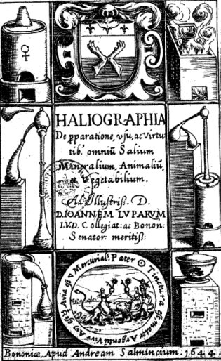
frontispice de l'Haliographia, Bononiae, 1644
Such are the facts which are recorded by BASIL VALENTINE, respecting the preparation of nitric acid; he termed it water, or acid spirit of nitre. It was afterwards called aquafortis, and its property of dissolving gold, with the addition of sal ammoniac, or of muriatic acid, is often adverted to and descanted upon by the same author. For nearly two hundred years after the discovery of aquafortis, its chemical history was but little advanced; nor, indeed, were any facts of importance respecting its true nature made out, until Dr. PRIESTLEY and Mr. CAVENDISH commenced their researches, about the middle of the last century. [cf. Chevreul, critique de Hoefer] The method which, in this country, is now universally resorted to for the production of aquafortis consists in the decomposition of nitre by sulphuric acid; the results are liquid nitric acid, and sulphate of potassa. Dr. PRIESTLEY [on Air, Vol. IV., p. 3], between 1774 and 1778, made a variety of curious experiments to ascertain the effects of heat on nitric acid; he passed it through a red-hot tube, and found it resolved into oxygen, nitrous gas, nitrous vapour, and water: and thus the composition of this acid was analytically demonstrated. About the same time, Mr. CAVENDISH [Phil. Trans. Vols. LXXV.and LXXVIII] produced this acid, by passing repeated electrical explosions through common air, and through mixtures of oxygen and nitrogen, over solution of potassa. Thus the nature of nitric acid was synthetically and analytically demonstrated; and from the result of the most accurate and recent experiments upon this subject, it appears to consist, in its dry and .combined state, of 13 nitrogen + 37,6 oxygen; and in the liquid state, of 50,5 dry acid, + 17 water. But the discovery of nitric acid is certainly second in importance to that of oil of vitriol, or, as it is now called, sulphuric acid, the honour of which is also due to BASIL VALENTINE ; for it is not, as far as my information goes, described in any earlier writer; he frequently mentions it, and the mode of its preparation; and PARACELSUS, and the authors who immediately followed, talk of it as well known, and in common use, though it is probable that it bore a high price, and wag but scantily supplied by a few awkward and unintelligent operators. In the Currus Triumphalis, the spirit afforded by the distillation of vitriol is not unfrequently adverted to, and its action upon certain antimonial cornpounds so fully described, as to leave no doubt respecting its nature. In the Haliographia, however, oil of vitriol is distinctly mentioned; and, what is curious, we find in the chapter of that tract relating to the extraction of the salts of iron, particular directions for the preparation of sulphat of iron, by dissolving iron-filings in a mixture of one part of oil of vitriol, and two of water; this solution, he says, " when put aside in a cool place, soon forms beautiful crystals" and in another section we are told, that " this salt is an excellent tonic; that it comforts weak stomachs; and that externally applied, it is an admirable styptic." And this, in fact, is nearly all that we can say of the preparation and medical uses of this salt of iron at the present day. [on utilise les sels de fer dans les carences martiales avérées dues en général à une spoliation sanguine] The mode of obtaining sulphuric acid, by the distillation of sulphate of iron, or green vitriol, is still extensively practised upon the Continent, in Germany, Sweden, and more especially at Bleyl, in Bohemia [AIKIN's Dictionary. Art. Sulphuric Acid]. The vitriol is first deprived of water of crystallization, and then submitted, in glass retorts coated with clay, to a red heat; white fumes pass over into the receivers, which become very hot during the condensation of these fumes into an unctuous reddish-brown fluid, which, from its viscidity and appearance, acquired the name of oil of vitriol: there remains in the vessels a substance of a fine red colour, which, when washed and levigated, furnishes what has been termed colcothar, or caput mortuum of vitriol; for the old chemists were in the habit of representing the dregs and last products of substances by the symbol of a death's head and cross bones.
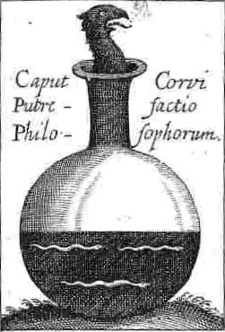
Anatomia Auri, sine Tyrocinium, Mylius
The oil of vitriol, thus prepared, exhales fumes when exposed to a moist atmosphere, and occasionally congeals or crystallizes; circumstances which led to its name of glacial oil of wtriol, and which show that it differs from the acid as ordinarily prepared. That sulphur during combustion produces a portion of add water, seems to have been known at a very early period; but the method of obtaining sulphuric acid by burning a mixture of sulphur and nitre is, I believe, first described by VALENTIME, in his Chariot of Antimony, under the name of Oil of antimony, for he employed sulphuret of antimony for its production. The original recipe runs thus:
" Take of antimony, sulphur, saltnitre, of each equal parts, fulminate them under a bell, as oil of sulphur per campanam is made, which, way of preparing hath long since been known to the ancients ; but you will have a better way, if instead of a bell you take an alembic, and apply to it a recipient; so you will obtain more oil, which will indeed be of the same colour as that made of common sulphur, but in powers and virtues not a little more excellent."
Dr. WARD, the inventor of many celebrated nostrums, was the first person who brought this preparation into notice in England; and he obtained a patent for his invention, and for a considerable time monopolized the manufacture of the acid. At length Dr. ROEBUCK, an eminent physician of Birmingham, substituted an apparatus of lead for the glass vessels previously used. This was in 1746, since which the price of sulphuric acid has been greatly reduced, and the manufacturer consequently enabled to employ it for a variety of purposes, to which it was previously inapplicable, from its scarcity and high price. In 1772, the first manufactory of sulphuric acid near the metropolis, was established by Messrs. KINGSCOTE and WALKER, at Battersea [PARKES, Chemical Essays, Vol. II. p. 388]. I have mentioned that the necessity and advantages of nitre, as an addition to sulphur in increasing the acid product, was known to VALENTINE; but the manner in which it operates is a later discovery. As the expense of the operation is materially increased by it, many attempts have been made to supersede its use by the employment of other materials, under the impression that it merely furnished oxygen; but a little reflection easily proves the fallacy of such a notion; for, even if we burn sulphur in pure oxygen, sulphurous, and not sulphuric acid, is the result. The solution of this chemical problem has been chiefly effected by the researches of Sir H. DAVY, who has proved that the products of the nitre are concerned in transferring oxygen to the sulphur. A patent has however lately been taken out for a mode of preparing sulphuric acid by the combustion of pyrites, without the intervention of nitre, which promises perfect success. The numerous antimonial preparations described in the Chariot of Antimony, deserve more notice than they have generally received from the chemical historian; and the perusal of that work affords some insight into the celebrated disputes between the galenical and chemical physicians, which were afterwards pushed so far by PARACELSUS. [cf. les premiers écrits R+C ainsi que les précurseurs dont furent, assurément, Hadrien Mynsicht, Michel Maier et Johann Grasshoff : Aureum Seculum Redivivum ; Tractatus Aureus ; Atalanta fugiens] BASIL VALENTINE, adverting to the notion that antimony was poisonous, tells us, that its noxious qualities may not only be subdued by art, but that various properties may be communicated to its different preparations—
" As a blacksmith," he says, " with one sort of fire, and iron only is his matter, of which he forms divers instruments. Sometimes he makes a spit, at another time horse-shoes, another time a saw, and at length innumerable other things, every of which serves for that use for which the smith intended it. So of antimony various works may be made for different uses,— in which the artist is the smith that forms, Vulcan is the key which opens, and operation and utility give experience and knowledge of the use. Oh, if foolish and vain men would hear and understand what I write, they would not suck their turbid and insalubrious potions, but hasten to these limpid fountains, and drink of the well of life."
In pursuing his defence of antimony, the author allows its venemous nature, but then tells us, that upon that circumstance its value in medicine depends, upon the principle that venom draws venom to itself; and adduces as proof of this position, the well-known fact, as he terms it, that a dried toad reduced to powder, and sprinkled upon the wound occasioned by a viper's bite, cures it. ; PARACELSUS comes next in chronological order to his predecessor, BASIL VALENTINE, but as a chemist he falls far short of that master; his original discoveries are few and unimportant, and his great merit lies in the boldness and assiduity which he displayed in introducing chemical preparations into the Materia Medica, and in subduing the prejudices of the galenical physicians against the productions of the laboratory. The principal events of his life are the following:—His real name was PHILIP HOCHENER, which he changed on commencing his professional career into THEOPHRASTUS BOMBASTUS PARACELSUS. At an early age he visited the most renowned towns in Europe, and returning to his native country, was made professor of medicine and chemistry at Basle; he availed himself of this public situation, not to instruct the unlearned, but to vilify his contemporaries and predecessors. It is generally said, that his dissolute manners and intractable temper obliged him to quit his occupation. But others have told a more plausible story: a rich Canon fell sick; and getting frightened, offered 100 florins to any one who would cure him. PARACELSUS administered three pills, and the Canon got well; but being so soon restored, and by such simple means, he refused to fulfil his promise. The matter was brought before a magistrate, who decreed that the doctor should only recover the customary fee. Irritated at the flimsy excuses, and unpardonable ingratitude of the priest, and at the magistrate's partial decision, PARACELSUS declared that he would leave the inhabitants of Basle to the eternal destruction which they deserved; he then retired to Strasburgh, and thence into Hungary, where he took to drinking, and died in great poverty at Saltzburgh, in 1541, and in the forty-third year of his age. Though we can fix upon no particular discovery on which to found his merits as a chemist; and though his writings are deficient in the acumen and knowledge displayed by several of his contemporaries and immediate successors, especially by THEODORE DE MAYERNE, and DU CHESNE, [cf. Aureum Seculum Redivivum] or as he was generally called, QUERCITANUS; it is undeniable that he gave a most important turn to pharmaceutical chemistry; and calomel, first described by CROLLIUS, in 1609, with a variety of mercurial and antimonial preparations, as likewise opium, came into general use. Although the chemical physicians, however, were very successful, they were aware of the unpopularity of their means; people were frightened at the idea of mercury and antimony, which were accordingly exhibited under fantastic and assumed names. Towards the end of the fifteenth century, the use of antimony was prohibited at Paris; and BESNIER expelled the faculty for having persevered in administering it. In England, chemical medicines began to be employed in the reign of CHARLES I. In 1644, SCHRÖDER published his Chemico-Medical Pharmacopaeia; and shortly after that of the London College made its appearance; but although the history of pharmaceutical chemistry must not. be blended with the abstract progress of the science, yet should it not be forgotten, that the great modem improvements in chemistry have sprung from its applications to medicine, and that the foundations of chemical science are to be found in the medical and pharmaceutical writers of the sixteenth century; who rescued it from the hands of the alchemical pretenders, and gave it a place and character of its own. The enthusiastic ravings of PARACELSUS tended to awaken the more solid talents of VAN HELMONT of Brussels, who flourished in the early part of the seventeenth century, and who studied and admired the works of his less modest predecessor. VAN HELMONT has left a curious memoir containing a sketch of his own life, and exhibiting the various circumstances that gave an impulse to his proceedings, and the different causes that suggested his pursuits. In this biographical relic, there is a vein of sound and unaffected argument, which displays a very amiable turn of mind in the writer. It would, however, be irrelevant to my present subject to give more than a very brief abstract, illustrative of the style and pursuits of the author.
" In 1694, being then seventeen years of age, I finished my courses of philosophy, but upon seeing none admitted to examinations at Louvain who were not in a gown and hood, as though the garment made the man, I was struck with the mockery of taking degrees in arts. I therefore thought it more profitable seriously and conscientiously to examine myself; and then I perceived that I really knew nothing, or, at least, nothing that was worth knowing. I had, in fact, merely learned to talk and to wrangle, and therefore refused the title of Master of Arts, finding that nothing was sound, nothing true, and unwilling to be declared master of the seven arts, when my conscience told me I knew not one. The Jesuits, who then taught philosophy at Louvain expounded to me the disquisitions and secrets of magic; but these were empty and unprofitable conceits; and, instead of grain, I reaped stubble. In moral philosophy, when I expected to grasp the quintessence of truth, the empty and swollen bubble snapped in my hands. I then turned my thoughts to medicine, and having seriously read GALEN and HIPPOCRATES, noted all that seemed certain and incontrovertible; but was dismayed upon revising my notes, when I found that the pains I had bestowed, and the years I had spent, were altogether fruitless; but I learned at least the emptiness of books and formal discourses and promises of the schools. I went abroad, and there I found the same sluggishness in.study, the same blind obedience to the doctrines of their forefathers, the same deep-rooted ignorance." [JOHANNIS BAPTISTAE VAN HELMONT Opera omnia. Hafn. 1707. The above extract is from the Studia Authoris. p. 16.]
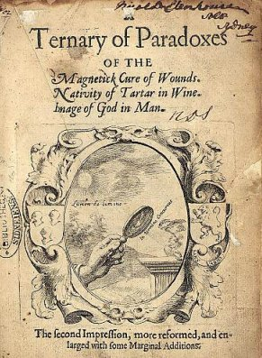
A ternary of paradoxes : the magnetick cure of wounds, nativity of tartar in wine, image of God in man.
London : Printed by James Flesher for William Lee, 1650
VAN HELMONT was called by his contemporaries an insane enthusiast; but there is, even in the very imperfectly- translated and brief quotation that I have taken from the history of his studies, a propitious gleam of that dawn of improvement which was diffused over science by the genius of Lord BACON. The doctrine of the chemical elements was in full vogue during the time. of VAN HELMONT, PARACELSUS, and VALENTINE, and salt, sulphur, and mercury, are unequivocally mentioned as the ultimate component parts of almost all the, forms of matter. In the writings of VAN HELMONT, there are sundry allusions to the existence of aeriform bodies, and the word gas now in common use, and applied to all aeriform matters differing from atmospheric air, first occurs in his pages: he also distinguishes between condensible gases or vapours, and incondensible or permanently elastic fluids; and, under the term gas silvestre, he seems to comprehend what was afterwards called fixed air. As to the general tenour of his writings, it is difficult to separate the chemistry from the miscellaneous matters, and, more especially, from the medical commentaries with which it is blended; but they abound in hints and observations, which, if not original, are at least ingenious and acute. In his experiments on air, he seems to have argued very plausibly on its weight and elasticity; and has detailed with much precision, the effect of temperature and pressure, in his description of the air thermometer. We have now arrived at the middle of the seventeenth century, a period which was extremely fertile in chemical productions. In taking, however, a comprehensive view of the writers of this age, there are a few only whose labours deserve to be recorded as connected with the advancement of chemical knowledge; that is, as having contributed by new views and discoveries to the progress of what may be termed the philosophy of the science. They were generally mere recorders of insulated facts, or publishers of ill-digested and imperfectly arranged catalogues of the various preparations that were used in the arts, and in medicine; for the dread, in which chemical preparations were viewed by physicians began now to decline; the Materia Medica was filled with new and more convenient forms, and the Pharmacopaeiae published under the authority of different governments, were allowed to divulge the preparation of calomel, emetic tartar, and several other highly important and useful compounds. Among the writers of this period there is no one more rich in facts, and original in invention, than GLAUBER of Amsterdam. KUNCKEL was a successful promoter of chemistry applied to the arts; he wrote on the production of phosphorus, and on the art of glass-making, and was a favourite at many courts of Europe, more especially with CHARLES XI of Sweden, who, in 1693, granted him letters of nobility. In 1673, LEMERY, the elder, conferred much service on chemistry by his dexterity as an experimentalist, and by the plain perspicuous style in which he publicly taught the rudiments of the science. The discovery of phosphorus belongs also to this period, and although of little interest perhaps in the abstract, it drew a host of inquirers into the precincts of the laboratory, and was productive of more extensive and important consequences than have generally been attributed to it. But, having perused such of these writers as I have been able to procure, there is no one for whom I can so confidently ask attention, as GLAUBER; he was not a mere maker of experiments, but he reasoned sensibly and even acutely upon their results; he occasionally oversteps the bounds of modest argument, deprecates the views of his contemporaries, and praises himself beyond all measure; but this vitiated style was then in fashion, and unlike most of his contemporaries, he has very sufficient claims to originality of invention. His works were translated into English, and published, as the title runs, "for public good, by the labour, care, and charge of CHRISTOPHER PACKE, Phylo-Chemico-Medicus, in I689."
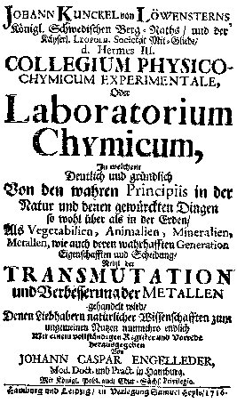
Johann Kunckel, Laboratorium Chymicum, Leipzig, 1716
GLAUBER was so laborious an experimentalist, and in his experiments there is so much originality, that it is difficult to select those which can strictly be called discoveries, and upon which bis scientific character deserves chiefly to be founded. The distillation of volatile alcali from bones, and its conversion into sal ammoniac by the affusion of spirit of salt; the preparation of sulphate of ammonia, which he calls secret sal ammoniac, and its conversion into common sal ammoniac by distillation with common salt; the production of blue vitriol by the action of acid of vitriol upon the green rust of copper; the distillation of vinegar from wood, and the formation of a variety of salts useful in medicine and the arts, by its action upon alcaline, earthy, and metallic substances; the distillation of muriatic acid, or spirit of salt, from a mixture of common salt and acid of vitriol; and the extraction of sulphate of soda, or sal mirabile from the residue of this experiment, are a few, and only a very few, of the truly important inventions and discoveries that crowd upon us in the perusal of the verbose pages of GLAUBER. Of these the production of vinegar of wood, and of muriatic acid, may perhaps be regarded as of the greatest interest and importance. The acid liquor produced during the destructive distillation of wood has lately become a manufacture of much importance, and is largely prepared by the makers of gunpowder, who obtain it as a result of their process for procuring charcoal. GLAUBER describes the distillatory apparatus, which he calls " a press for extracting the juice of wood;" he shews its condensation into an acid liquor; and directs the method of burning lime, by ranging layers of chalk, alternately with those of the wood. He also says, that by rectifying this spirit,
" a sharp hot oil, of a dark reddish colour remains, and the vinegar passes over, fit for tile preparation of medicines, and all other uses to which common vinegar is applicable."
The oil, he adds, is an admirable preservative of wood, and when saponified with alkali, forms a most valuable manure;
" a hogshead of which may be carried into fields and vineyards far remote, more easily than ten loads of common manure, which is carried to vineyards in rocky places with great difficulty. As to the spirit, physicians may use this noble and efficacious juice with great honour and profit in the cure of many diseases hitherto incurable;"
and he highly extols an acid bath, made by due ad mixture of the vinegar of wood with warm water: he also shows the mode of concentrating it by exposure to cold, when
" the phlegm only freezeth, but the sharp spirit remaineth in the middle of the hogshead, so sharp that it corrodeth metals like aqua-fortis."
After many other shrewd and clever remarks respecting the tar of wood and its acid, GLAUBER closes his discourse fearing that it will not be believed by many, which, he says, he cannot help;
" it contenteth me that I have written the truth, and lighted a candle to my neighbours."
The preparation of muriatic acid, as now commonly conducted, was first devised by GLAUBER; he obtained it by distilling common salt with acid of vitriol, and gives a sufficiently clear account of the nature of the chemical change that ensues. The residue of this operation retains to this day the name of GLAUBER'S salt; or, as he termed it, sal mirabile [rappelons qu'il s'agit du sulfate de soude ou sel admirable de Glauber ; pour le vrai disciple d'Hermès, il est congénère de l'arcanum duplicatum]. Upon its virtues he has descanted at great length, and though in his history of this salt, its value and uses are preposterously exaggerated, his observations serve to shew the diligence and acuteness with which he investigated its applications, and offer proofs of the- extensive information which he possessed relative to many processes of agriculture and the arts. Salt, in short, was GLAUBER's favourite element;
" It is," says he, " the beginning and end of all things, and it increaseth and exalteth their powers and virtues: it is the true universal medicine; not that I would have any man persuade himself, that in these words I would assert immortality, for my purpose tendeth not thither, seeing that I am not ignorant there is no medicine against death." [on ne saurait, en effet, trouver paroles plus prophétiques, et singulièrement dans la médecine actuelle où les anti oxydants jouent un rôle des plus importants. Or, quel effet possèdent ces substances si ce n'est celui des super-oxydes dismutases consistant, précisément, dans la création de sels et la prévention d'agressions de la part de radicaux libres ? Ces radicaux libres - H2O2 ; O3- ; OH - exercent une action délétère sur les phospholipides membranaires et détériorent la chaîne ADN. On a pu montrer que le sport ou un repas copieux augmentent la production des radicaux libres : c'est ainsi que le stress oxydatif endogène représente l'une des composantes du vieillissement de l'organisme. Certains vieux chimistes comme Glauber ou des praticiens comme Bernard Palissy avaient bien compris l'intérêt des SELS, c'est-à-dire de la neutralisation. Il est d'autant plus intéressant de comprendre cela que les anciens médecins, qui en bref se répartissaient en deux groupes : Galiens et Hippocratiques, pronaient - pour les Galiens - les prescriptions dites « chémiatriques » où intervenaient les métaux. La médecine métallique est donc ancienne mais son intérêt n'a été reconnu à sa juste valeur que depuis que les progrès de la chimie moléculaire ont pu faire voir l'intérêt de certains oligo-éléments ou d'enzymes : l'intervention de métaux comme le zinc, le manganèse ou le cuivre, etc. est fondamentale dans le mode d'action de ces enzymes. ]
And then, adverting to the opposition to chemical medicines by contemporary physicians, he advises them not to envy those
" who have received such divine gifts as his wonderful salt, nor to provoke the innocent with their filthy calumnies and slanders, but to leave those things which exceed their capacities. Nothing," he says, " can extinguish truth; it may be prest, but cannot be overcome; like the sun's light it may be hidden, but not extinguished."
The directions he gives for the preparation of the sal mirabile, and the account of its properties, are in general very correct
" Its colour ought to be white and transparent; its figure is in long striae or crystals; its taste is like ice melting upon the tongue, and yields some bitterishness. Being dried in the fire, and all the moisture gone off, it will lose about three parts of its own body, and retain a fourth part only; being dissolved in water, it will recover those three parts again. But, on the contrary, if it shoot into a square figure, and hath as yet a saltish taste, and being dried, loseth but little of its weight, it is not worth a rush, and shows that either the oil of vitriol was not good, or not enough of it used in the operation. These things we would not bury in silence, that so we might well advise young beginners, and withdraw them from their errors."
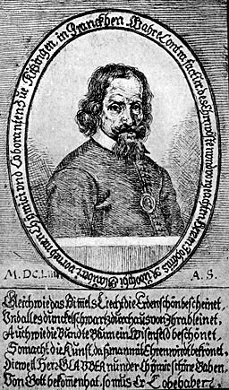
Jean-Rodolphe Glauber (1604-1670)
The present mode of preparing muriatic acid is almost exactly that devised by GLAUBER. In its pure state it was first obtained and examined by Dr. PRIESTLEY. The composition of this acid is a discovery of more modem date. The investigation which led to it was commenced by SCHEELE, and perfected by our contemporaries, GAY-LUSSAC, and DAVY. GLAUBER has great merit as an inventor and improver of chemical apparatus, much of which is depicted in the plates attached to his works. The form of distillatory vessels, commonly called WOULFE'S apparatus, is found in GLAUBER'S Chemical furnaces; and he contrived a very ingenious mode of heating large vessels of water by steam, and with great economy of fuel, a method now often resorted to. He published a pamphlet, entitled, The Consolation of Navigators, in which is taught how they who travel by Sea may preserve themselves from Hunger and Thirst; and also from those Diseases which are wont to happen in long Voyages. Written for the Health, Comfort, and Solace of all those who travel by Water for the good of their Country. The very sensible plan of employing extract of malt as a portable vegetable diet, and dilute muriatic acid to quench thirst, is here recommended; and many of the medicinal uses of the muriatic acid are dwelt upon at length, which have been claimed as recent discoveries. On the whole, there is no author contemporary with GLAUBER, who has written so much to the purpose, and in whom we find such abundant anticipations of modern scientific improvements. He was cast in the true mould, of an experimental chemist, and had he lived in a more propitious age, would doubtless have rivalled the eminence of SCHEELE and of PRIESTLEY. [...]
Voici à présent quelques lignes de Francis Bacon sur les principes de l'oeuvre :
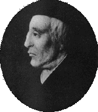
THE HISTORY OF SULPHUR, MERCURY, AND SALT. INTRODUCTION.Que pensait-on de l'alchimie et de la pierre philosophale au XIXe siècle ? Il nous a semblé utile, en préambule à l'idée alchimique, de donner quelques lignes de Jacques Auguste Simon Collin de Plancy (1794-1881) : Dictionnaire des sciences occultes... ou Répertoire universel des êtres, des personnages, des livres... qui tiennent aux apparitions, aux divinations à la magie [Ateliers catholiques du Petit-Montrouge, 1846-1848]
This triad of principles has been introduced by chemists, and as a speculative doctrine it is the best discovery that they have made. The deepest philosophers amongst them maintain the elements to be earth, water, air, and ether. [cf. Platon et Aristote in Chevreul] But these they regard not as the matter of things, but as wombs, wherein specific seeds of things are generated, in the same manner as in the womb. But instead of the First Matter (which the schoolmen call matter spoiled and indifferent), they substitute these three things, sulphur, mercury, and salt; whereof all bodies are compounded and mixed. Their terms I accept, but not their opinions, which do not appear sound. It seems however not to sort ill with their opinion, that two of these, namely, sulphur and mercury (in the sense in which I take them), I judge to be the most primasval natures, the most original configurations of matter, and among the forms of the first class almost the principal. But these terms of sulphur and mercury may be varied, and receive different denominations; as, the oily, the watery, the fat, the crude, the inflammable, the non-inflammable, and the like. For they appear to be those two enormous tribes of things which occupy and penetrate the universe. In the subterranean world we find sulphur and mercury, as they are called; in the animal and vegetable world we find oil and water; in pneumatical bodies of the lower order we find air and flame ; in the celestial regions we find starry body and pure ether. But of this last pair I do not as yet pronounce decisively, though the concordance appears probable. With regard to salt, the case is different. For if by salt they mean the fixed part of a body, which does not turn either into flame or smoke, this belongs to the inquiry of matter fluid and matter determinate, whereof I am not now speaking. But if they mean salt to be taken in its plain and literal signification, it cannot be regarded as a thing different from sulphur and mercury, seeing it is a formation compounded from them both, by means of a strong spirit. For all salt has some inflammable parts; and some parts which not only do not conceive flame, but strenuously shrink from and avoid it. However, since the inquiry concerning salt has some connection with the inquiry into the other two things, and moreover is of great use,—seeing that salt comprises in itself the nature of sulphur and mercury, and is a rudiment of life itself,— I have thought good to admit it likewise into this history and inquiry. But meanwhile I give notice that I reserve the inquiries into those pneumatical bodies, air, flame, the stars, and ether, for titles of their own (as they certainly merit); and that here I only institute a history of sulphur and mercury tangible, that is, either mineral, vegetable, or animal.
The works of Francis Bacon. Fünfter Band, [Translations of the philosophical works, vol. II], The history of sulphur, mercury and salt, Stuttgart : Frommann : Holzboog, 1991. Fac-sim. de l'éd. de, London, 1861
________________________________
On regarde la pierre philosophale comme une chimère. Un mépris si mal raisonné, disent les philosophes hermétiques, est un effet du juste jugement de Dieu, qui ne permet pas qu'un secret si précieux soit connu des méchants et des ignorants. La science de la pierre philosophale bu la philosophie hermétique fait partie de la cabale, et ne s'enseigne que de bouche à bouche. Les alchimistes donnent une foule de noms à la pierre philosophale : c'est la fille du grand secret, le soleil est son père, la lune est sa mère, le vent l'a portée dans son ventre, etc. [citations de la Tabula Smaragdina] Le secret plus ou moins chimérique de faire de l'or a été en vogue parmi les Chinois longtemps ayant qu'on en eût les premières notions en Europe. Ils parlent dans leurs livres, en termes magiques, de la semence d'or et de la poudre de projection. lia promettent, de tirer de leurs creusets, non seulement de l'or, mais encore un remède spécifique et universel qui procure à ceux qui le prennent une espèce d'immortalité.Voilà, pour terminer, quelques mots de Svante Arrhenius, l'inventeur du concept d'ion :
Zosime, qui vivait au commencement du Ve siècle, est un des premiers parmi nous qui aient écrit sur l'art de faire de l'or et de l'argent, ou la manière de fabriquer la pierre philosophale. Celle pierre est une poudre ou une liqueur formée de divers métaux en fusion sous une constellation favorable. Gibbon remarque que les anciens ne connaissaient pas l'alchimie. Cependant on voit dans Pline que l'empereur Caligula entreprit de faire de l'or avec une préparation d'arsenic, et qu'il abandonna son projet, parce que les dépenses l'emportaient sur le profit [cf. prima materia]. Des partisans de cette science prétendent que les Egyptiens en connaissaient tous les mystères. Cette précieuse pierre philosophale, qu'on appelle aussi élixir universel, eau du soleil [heureuse formulation de l'aqua permanens ou Mercure], poudre de projection, qu'on a tant cherchée, et que sans doute on n'a jamais pu découvrir (Voyez pourtant Raymond Lulle, quant à ce qui concerne l'or.), procurerait à celui qui aurait le bonheur de la posséder des richesses incompréhensibles, une santé toujours florissante, une vie exempte de toutes sortes de maladies, et même, au sentiment de plus d'un cabaliste, l'immorlalité... Il ne trouverait rien qui pût lui résister, et serait sur la terre le plus glorieux, le plus puissant, le plus riche, et le plus heureux des mortels ; il convertirait à son gré tout en or, et jouirait de tous les agréments. L'empereur Rodolphe [il s'agit de Rodolphe II, cf. Atalanta fugiens] n'avait rien plus a cœur que cette recherche. Le roi d'Espagne Philippe II employa, dit-on, de grandes sommes à faire travailler les chimistes aux conversions des métaux. Tous ceux qui ont marché sur leurs traces n'ont pas eu de grands succès. Quelques-uns donnent cette recette comme le véritable secret de faire l'œuvre hermétique : Mettez dans une fiole de verre fort, au feu de sable, de l'élixir d'aristée [auteur alchimique qui a écrit une Epitre à la suite de la Turba philosophorum, cf. bibliographie], avec du baume de mercure et une pareille pesanteur du plus pur or de vie ou précipité d'or, et la calcination qui restera au fond de la fiole se multipliera cent mille fois. Que si l'on ne sait comment se procurer de l'élixir d'aristée et du baume de mercure, on peut implorer les esprits cabalistiques, ou même, si on l'aime mieux, le démon barbu [il doit s'agir du Mercurius senex que l'on voit sur la première figure du Livre d'Abraham Juif ; il pourrait encore s'agir du prêtre blanc dont parle Zosime dans ses Visions. Comparez avec Jung, les Racines de la conscience], dont nous avons parlé.
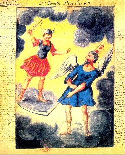
première figure d'Abraham Juif, in Alchimie de Nicolas Flamel [Denis Molinier]
On a dit aussi que saint Jean l'évangéliste avait enseigné le secret de faire de l'or; et en effet, on chantait autrefois, dans quelques églises, une hymne en son honneur, où se trouve une allégorie que les alchimistes s'appliquent :
lnexhaustum fert thesaurum
Qui de virgis facit aurum,
Gemmas de lapidibus.
D'autres disent que, pour faire le grand œuvre, il faut de l'or, du plomb, du fer, de l'antimoine, du vitriol, du sublimé, de l'arsenic, du tartre, du mercure, de l'eau, de la terre et de l'air, auxquels on joint un œuf de coq, du crachat, de l'urine et des excréments humains
[l'auteur n'entend rien à la cuisine hermétique : c'est ainsi qu'on fait accroire aux gens que l'alchimiste a le sens égaré... Car il cite, sans le savoir, de grands principes de l'Art sacré : l'oeuf philosophal est le vase de nature où l'Artiste fait cuire les natures minérale et métallique ; le coq annonce l'Aurora consurgens ou plutôt l'anima consurgens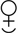
; le crachat de lune, que les envieux confondent avec le nostoc, est un mot qui désigne le Sel des des Sages, cf. en recherche. Enfin, les alchimistes disent dans leurs traités que l'impétrant ira chercher sa pierre jusque dans le fumier ; quant aux « fèces » du mercure - faex, trux -, elles sont assimilées à la lie du vin ; aussi les Adeptes conviennent- ils souvent d'adopter le mot vin pour désigner leur Mercure puisque son but désigné est la captation d'un rayon igné solaire vivant].
Aussi un philosophe a dit avec raison que la pierre philosophale était une salade, et qu'il y fallait du sel, de l'huile et du vinaigre.
[le mot salade est mis pour laitue : c'est ainsi que s'exprime Michel Maier, dans l'un des emblèmes de l'Atalanta fugiens, où il emploie le terme d'euphorbe. Ce mot ne désigne rien d'autre que le Compost, i.e. le Mixte Rebis - Mercure. Le Sel à présent : il en existe de deux sortes ; celui qui exprime l'un des composants du Mercure et que l'on représente par l'idéogramme; quant à l'autre, il s'agit rien moins que du suc de la Lunaire qui désigne le Soufre blanc
. L'huile est d'habitude le symbole du sulphur
; enfin le vinaigre est le serpent ou dragon, premier état du Mercure, cf. Artephius et les vieux auteurs comme Senior - cf. Azoth - où ceux que l'on fait participer à cette compilation qui s'appelle la Turba]
Nous donnerons une plus ample idée de la matière et du raisonnement des adeptes, en présentant au lecteur quelques passages du Traité de chimie philosophique et hermétique publié à Paris en 1725 (Traité de chimie philosophique et hermétique, enrichi des opérations les plus curieuses de l'art, sans nom d'auteur. Paris, 1725, in-12, avec approbation signée Audry, docteur en médecine, et privilège du roi.). [il s'agit peut-être du traité dont parle Chevreul comme étant celui de Marie Pompée Colonna alias Le Crom, cf. Cambriel]
« Au commencement, dit l'auteur, les sages, ayant bien considéré, ont reconnu que l'or engendre l'or et l'argent, et qu'ils peuvent se multiplier dans leurs espèces. Les anciens philosophes, travaillant par la voie sèche, ont rendu une partie de leur or volatil, et l'ont réduit en sublimé blanc comme neige et luisant comme cristal ; ils ont converti l'autre partie en sel fixe ; et de la conjonction du volatil avec le fixe, ils ont fait leur élixir [dans cette opération, le sel fixe est assimilable au CORPS de la pierre ou au SEL que l'on peut représenter par l'idéogramme
« Pour le second travail, prenez, au nom de Dieu, une part de cette chaux d'or et deux parts de l'eau spirituelle chargée de son sel ammoniac; mettez celle noble confection dans un vase de cristal de la forme d'un œuf, scellez le tout du sceau d'Hermès [il s'agit du vase de nature fermé par le sceau vitreux d'Hermès]; entretenez un feu doux et continuel, l'eau ignée [l'aqua permanens] dissoudra peu à peu la chaux d'or; il se formera une liqueur qui est l'eau des sages et leur vrai chaos, contenant les qualités élémentaires, chaud, sec, froid et humide.Laissez putréfier cette composition jusqu'à ce qu'elle devienne noire: cette noirceur, qui est appelée la tête de corbeau [le début des opérations, cf. Donum Dei] et le saturne des sages [l'antimoine saturnin d'Artephius et de Tollius], fait connaître à l'artiste qu'il est en bon chemin. Mais pour ôter cette noirceur, puante, qu'on appelle aussi terre noire, il faut faire bouillir de nouveau, jusqu'à ce que le vase ne présente plus qu'une substance blanche comme la neige. Ce degré de l'œuvre s'appelle le cygne [le cygne est la représentation du Mercure à cette époque de l'oeuvre ; il faut citer ici les couleurs de la queue de paon qui précèdent ce stade de l'albification. Sur la volière de l'oeuvre, cf. le Jocus Severus de Michel Maier]. Il faut enfin fixer par le feu cette liqueur blanche qui se calcine et se divise en deux parts, l'une blanche pour l'argent, l'autre rouge pour l'or ; alors vous aurez accompli les travaux et vous posséderez la pierre philosophale.
« Dans les diverses opérations, on peut tirer divers produits : d'abord le lion vert, qui est un liquide épais, qu'on nomme aussi l'azot [premier état du Mercure, on le nomme AZOTH, cf. Libavius et recherche], et qui fait sortir l'or caché dans les matières ignobles ; le lion rouge, qui convertit les métaux en or: c'est une poudre d'un rouge vif; la tête de corbeau dite encore la voile noire du navire de Thésée, dépôt noir qui précède le lion vert et dont l'apparition, au bout de quarante jours, promet le succès de l'œuvre: il sert à la décomposition et putréfaction des objets dont on veut tirer l'or: la poudre blanche qui transmue les métaux blancs en argent fin; l'élixir au rouge, avec lequel on fait de l'or et on guérit toutes les plaies; l'élixir au blanc, avec lequel on fait de l'argent et on se procure une vie extrêmement longue : on l'appelle aussi la fille blanche des philosophes. Toutes ces variétés de la pierre pilosophale végètent et se multiplient... »
Le reste du livre est sur le même ton. Il contient tous les secrets de l'alchimie. Voy. BAUME UNIVERSEL, ELIXIR DE VIE, OR POTABLE, etc. Les adeptes prétendent que Dieu enseigna l'alchimie à Adam, qui en apprit le secret à Enoch, duquel il descendit par degrés à Abraham, à Moïse, à Job, qui multiplia ses biens au septuple par le moyen de la pierre philosophale, à Paracelse, et surtout à Nicolas Flamel. Ils citent avec respect des livres de philosophie hermétique qu'ils attribuent à Marie, sœur de Moïse [Marie la Prophétesse ou Marie la Juive], à Hermès Trismégiste, à Démocrite [pseudo Démocrite, voir Idée alchimique, II], à Aristote [voir IVe Livre des Météorologiques], à saint Thomas d'Aquin, etc. La boîte de Pandore, la toison d'or de Jason, le caillou de Sisyphe, la cuisse d'or de Pythagore, ne sont, selon eux, que le grand œuvre (Naudé, Apologie pour les grands personnages, etc.). Ils trouvent tous leurs mystères dans la Genèse, dans l'Apocalypse surtout, dont ils font un poème à la louange de l'alchimie ; dans l'Odyssée, dans les Métamorphoses d'Ovide. Les dragons qui veillent, les taureaux [l'un des symboles de la matière portée au creuset] qui soufflent du feu, sont des emblèmes des travaux hermétiques. Gobineau de Montluisant, gentilhomme chartrain, a même donné une explication extravagante des figures bizarres qui ornent la façade de Notre-Dame de Paris [Fulcanelli s'en est inspiré dans le Mystère des Cathédrales ; faisons remarquer le style semblable et des passages identiques entre ce texte et l'Hypotypose de Magophon, alias Pierre Dujols, cf. Mutus Liber] ; il y voyait une histoire complète de la pierre philosophale. Le Père éternel étendant les bras, et tenant, un ange dans chacune de ses mains, annonce assez, dit-il, la perfection de l'œuvre achevée. D'autres assurent qu'on ne peut posséder le grand secret que par le secours de la magie ; ils nomment démon barbu le démon qui se charge de l'enseigner; c'est, disent-ils, un très-vieux démon.
[thématique reprise en substance par Jung lorsqu'il traite de la transformation de la Trinité en Quaternité par assimilation du quatrième au Diabolus, cf. Essais sur la Symbolique de l'Esprit, Aïon et les Racines de la Conscience ; cf. encore Réponse à Job. Voyez là-dessus nos trois volets de l'Aurora consurgens, le Ripley Scrowle et le 1er volet de notre commentaire des gravures de l'Hypnerotomachie ]
On trouve à l'appui de cette opinion, dans plusieurs livres de conjurations magiques, des formules qui évoquent les démons hermétiques. Cédrénus, qui donnait dans cette croyance, raconte qu'un alchimiste présenta à l'empereur Anastase, comme l'ouvrage de son art, un frein d'or et de pierreries pour son cheval. L'empereur accepta le présent et fit mettre l'alchimiste dans une prison où il mourut ; après quoi le frein devint d'or, et on reconnut que l'or des alchimistes n'était qu'un prestige du diable. Beaucoup d'anecdotes prouvent que ce n'est qu'une friponnerie ordinaire. Un rose-croix, passant à Sedan, donna à Henri ler, prince de Bouillon, le secret de faire de l'or, qui consistait à faire fondre dans un creuset un grain d'une poudre rouge qu'il lui remit, avec quelques onces de litharge. Le prince fit l'opération devant le charlatan, et tira trois onces d'or pour trois grains de cette poudre ; il fut encore plus ravi qu'étonné ; et l'adepte, pour achever de le séduire, lui fit présent de toute sa poudre transmutante. Il y en avait trois cent mille grains. Le prince crut posséder trois cent mille onces d'or. Le philosophe était pressé de partir; il allait à Venise tenir la grande assemblée des philosophes hermétiques [allusion à la Turba]; il ne lui restait plus rien, mais il ne demandait que vingt mille écus [il est déjà assez étonnant que l'alchimiste ait demandé de l'or...] ; le duc de Bouillon les lui donna et le renvoya avec honneur.Comme en arrivant à Sedan le charlatan avait fait acheter toute la litharge qui se trouvait chez les apothicaires de cette ville, et l'avait fait revendre ensuite chargée de quelques onces d'or, quand cette litharge fut épuisée, le prince ne fit plus d'or, ne vit plus le rose-croix et en fut pour ses vingt mille écus. Jérémie Médérus, cité par Delrio (Disquisit. mag., lib. i, cap. 5, quaest. 3), raconte un tour absolument semblable qu'un autre adepte joua au marquis Ernest de Bade. Tous les souverains s'occupaient autrefois de la pierre philosophale ; la fameuse Elisabeth la chercha longtemps. Jean Gauthier, baron de Plumerolles, se vantait de savoir faire de l'or ; Charles IX, trompé par ses promesses, lui fit donner cent vingt mille livres, et l'adepte se mit à l'ouvrage. Mais après avoir travaillé huit jours, il se sauva avec l'argent du monarque. On courut à sa poursuite, on l'attrapa et il fut pendu : mauvaise fin, même pour un alchimiste. En 1616 , la reine Marie de Médicis donna à Gui de Crusembourg vingt mille écus pour travailler dans la Bastille à faire de l'or. Il s'évada au bout de trois mois avec les vingt mille écus, et ne reparut plus en France. Le pape Léon X fut moins dupe. Un homme qui se vantait de posséder le secret de la pierre philosophale lui demandait une récompense. Le protecteur des arts le pria de revenir le lendemain, et il lui fit donner un grand sac, en lui disant que puisqu'il savait faire de l'or il lui offrait de quoi le contenir (Le comte d'Oxenstiern attribue ce trait au pape Urbain VIII, à qui un adepte dédiait un traité d'alchimie-Pensées, l. 1er, p. 172.). Mais il y eut des alchimistes plus fiers. L'empereur Rodolphe II, ayant entendu parler d'un chimiste franc-comtois qui passait pour être certainement un adepte lui envoya un homme du confiance pour l'engager à venir le trouver à Prague. Le commissionnaire n'épargna ni persuasion, ni promesse pour s'acquitter de sa commission ; mais le Franc-Comtois fut inébranlable, et se tint constamment à cette réponse : ou je suis adepte ou je ne le suis pas ; si je le suis, je n'ai pas besoin de l'empereur, et si je ne le suis pas, l'empereur n'a que faire de moi. Un alchimiste anglais vint un jour rendre visite au peintre Rubens, auquel il proposa de partager avec lui les trésors du grand œuvre, s'il voulait construire un laboratoire et payer quelques petits frais. Rubens, après avoir écouté patiemment les extravagances du souffleur, le
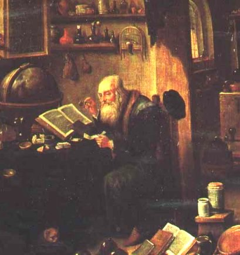
Un alchimiste dans son atelier, David Teniers le Jeune (1610-1690) [Teniers fut un disciple de Rubens et on lui doit plusieurs tableaux sur le thème de l'alchimie]
mena dans son atelier : Vous êtes venu, lui dil-il, vingt ans trop tard, car depuis ce temps j'ai trouvé la pierre philosophaie avec cette palette et ces pinceaux. Le roi d'Angleterre, Henri VI, fut réduit à un tel degré de besoin, qu'au rapport. d'Evelyn (dans ses Numismata) il chercha à remplir ses coffres avec le secours de l'alchimie. L'enregistrement de ce singulier projet contient les protestations les plus solennelles et les plus sérieuses de l'existence et des vertus de la pierre philosophaie, avec des encouragements a ceux qui s'en occuperont.Il annule et condamne toutes les prohibitions antérieures. Aussitôt que cette patente royale fut publiée, il y eut tant de gens qui s'engagèrent à faire de l'or, selon l'attente du roi, que l'année suivante Henri VI publia un autre édit dans lequel il annonçait que l'heure était prochaine où, par le moyen de la pierre philosophale, il allait payer les dettes de l'Etat en or et en argent monnayés. Charles II d'Angleterre s'occupait aussi de l'alchimie. Les personnes qu'il choisit pour opérer le grand œuvre formaient un assemblage aussi singulier que leur patente était ridicule. C'était une réunion d'épiciers, de merciers, et de marchands de poissons. Leur patente fut accordée authoritate parliamenti.
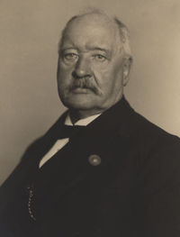
Svante August Arrhenius (1859-1927)
LE TROISIÈME PRINCIPE.Bonne introduction à l'idée alchimique.
La combustion avec développement de feu et de chaleur est la plus vieille des réactions chimiques. En conséquence, les alchimistes regardaient le feu ou la chaleur comme la caractéristique des réactions chimiques. Cette idée dominait la doctrine d'après laquelle toute réaction chimique est nécessairement, accompagnée d'un dégagement de chaleur, thèse que les vieux thermochimistes considéraient comme aussi certaine que le sont pour nous les deux principes de la Thermodynamique. Pour cette raison, le grand Berthelot l'appelait « Le troisième principe ». Lui et l'autre grand thermochimiste, le Danois Jules Thomson, se servirent de cette thèse comme principe fondamental de leurs vastes travaux. Pourtant il y avait des exceptions, car les équilibres chimiques étaient expliqués par l'intervention d'énergies perturbatrices d'ordre physique.
Conférences sur quelques problèmes actuels de la chimie physique et cosmique faites à l'université de Paris en avril et mai 1922 par M. Svante Arrhénius, Gauthier-Villars, 1922
1- L'idée alchimique -Quelle est la raison qui a poussé les hommes à vouloir percer les secrets de la matière, au point qu'ils ont cru pouvoir démembrer les métaux en principes particuliers, qui n'étaient, après tout que des « synthèses mentales », pour reprendre une expression du chimiste Eugène Chevreul ? Pourquoi ces idées ont-elles duré si longtemps, au point qu'à l'aube du XIXe siècle, on en était encore au phlogistique de Stahl, qui, après tout, n'avait fait que reprendre les idées de Joachim Becher, inventeur - pour sa part - de la 2ème théorie alchimique ? Pour répondre à ces questions, nous avons fait appel aux talents conjugués de Chevreul [Résumé de l'histoire de la Matière, Journal des Savants et critique de l'histoire de la chimie de F. Hoefer, parus en plusieurs livraisons au Journal des Savants], et de Marcellin Berthelot [Origines de l'alchimie, Introduction à la Chimie des Anciens et du Moyen Âge, études diverses parues dans le Journal des Savants]. Nous y avons ajouté l'une de nos sections, qui traite de la materia prima à travers les âges. Nous espérons ainsi avoir contribué à mieux définir l'Art sacré, à mieux cerner cette antique croyance, à démystifier cette légende tenace de la transmutation métallique ; tout autant nous espérons avoir contribué à démythifier le but que poursuivaient les alchimistes. Nous avons ajouté des Éloges sur de grands minéralogistes et chimistes français où plusieurs alchimistes ont cru déceler des rapports entre certaines facettes de leurs travaux et l'Art sacré. Une section leur est consacrée.
I. Introduction
Les Portiques du FEU : L'alchimiste a besoin d'un feu particulier qui brûle sans flamme, qui doit se comporter comme une eau ; mais il s'agit d'une eau qui doit aussi avoir certains caractères : elle doit être permanente, avoir tantôt la fluidité qui lui est propre, tantôt celle d'une matière qui s'apparente à de la lave [ruax]. Cette parabole explique d'ailleurs une partie de l'allégorie du massacre des Innocents remployée par Nicolas Flamel. Ce préambule à une exposition plus soutenue du FEU passe par le commentaire d'un poème que l'on attribue à Lactance, le De Ave Phoenice [poème du Phénix], oiseau consacré à Osiris, au soufre rouge et à la réincrudation. C'est une occasion inespérée de s'attarder sur la conjonction produite par le choc d'éléments platoniciens, aristotéliciens et stoïciens et d'examiner les rapports, plus ou moins immédiats, avec ce qu'il est convenu de nommer le Grand Oeuvre.
Les lapidaires chinois et grecs : la métamorphose lapidaire, tel est ce qu'enseigne le Wa-Kan-San-Tsaî-Dzou-Ye . C'est l'occasion d'étudier les prolégomènes de l'alchimie et de s'étonner des étranges points de convergence - à mettre sans doute sur la base d'archétypes - entre les civilisations chinoise et gréco-romaine. Berthelot et Fernand de Mély illustrent de leurs textes érudits ces variations sur les métamorphoses. Les lapidaires constituent, par ailleurs, une clef permettant d'accéder au contenu symbolique des pierres brutes ou travaillées.
partie I : après avoir resitué l'alchimie (historique, conditions de sa genèse, précautions à prendre dans l'exégèse des premiers textes, etc.), nous continuons la section par des considérations sur les pierres précieuses en faisant voir que leur préparation constitue la grande partie des tout premiers textes, ainsi du reste que des travaux de teinture ou même des étoffes qui sont congénères. Nous indiquons que, non seulement les chimistes, mais aussi les poètes, dont Remi Belleau, se sont intéressés à l'Art sacré et ont parfois prophétisé, en anticipant sur les découvertes des minéralogistes français [émanations volcaniques, voie humide de la Nature, etc.]. Nous étudions ensuite neuf articles de Marcellin Berthelot, parus dans le Journal des Savants, qui, à des titres divers, ont à voir avec les origines de l'alchimie par des considérations sur la matière des traités, les techniques chimiques, etc.
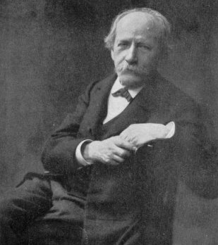
Marcellin Berthelot [1827-1907]
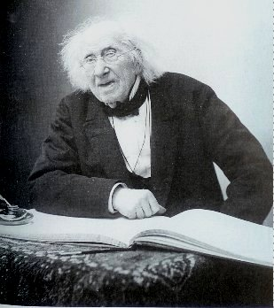
Michel-Eugène Chevreul [1786-1889]